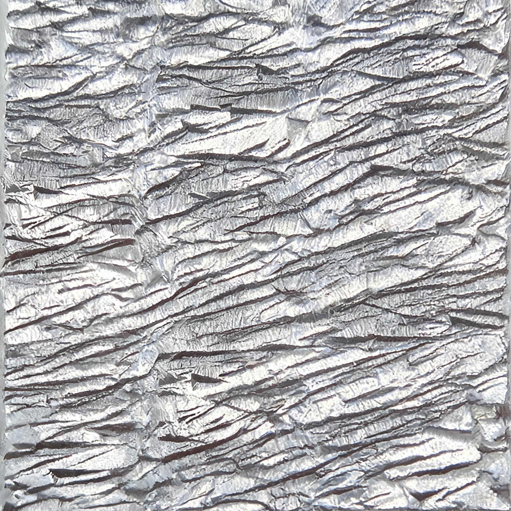
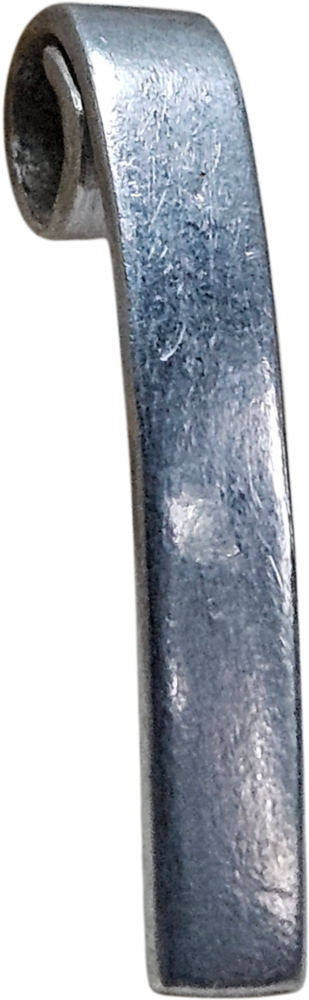
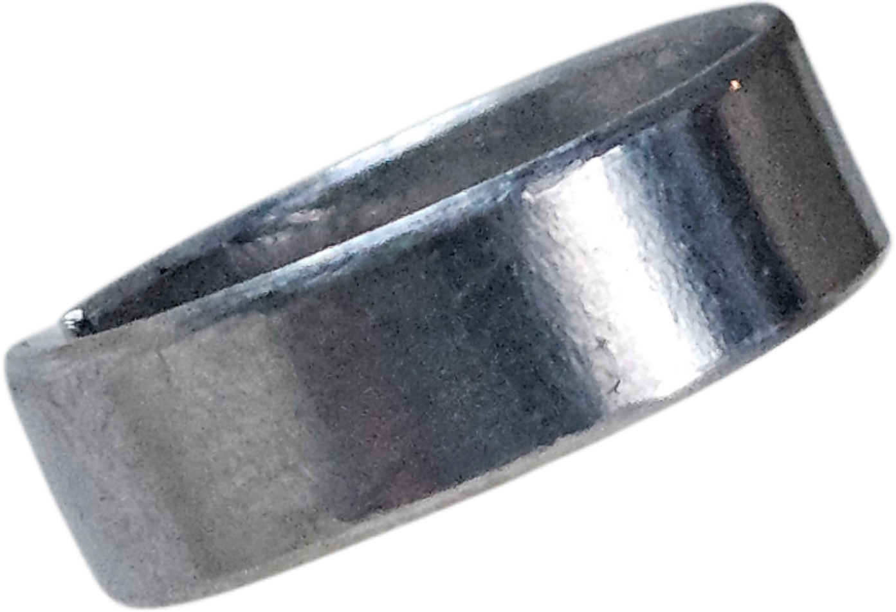
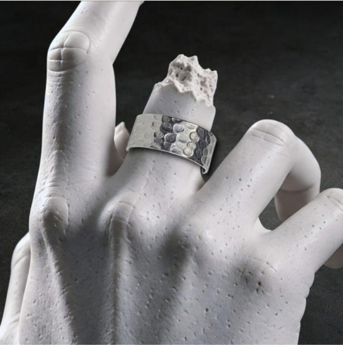

CircuitCurios · Materialarchiv 01
Oberfläche
als Identität.
Nicht Dekoration auf dem Stück, sondern ein Teil seiner Entstehung: Druck, Schlag, Bruch, Linie und Abrieb bleiben als Spur im Aluminium.

Archiv / Oberfläche
Die Oberflächen
Jede Struktur folgt einem Entstehungsprinzip. Öffne eine Oberfläche, um ihre Einordnung und die Idee dahinter zu sehen.



Prinzip
Die Oberfläche ist kein Finish.
Sie ist der Entwurf.
02 / Prozess
Vom neutralen Material zur Spur.


